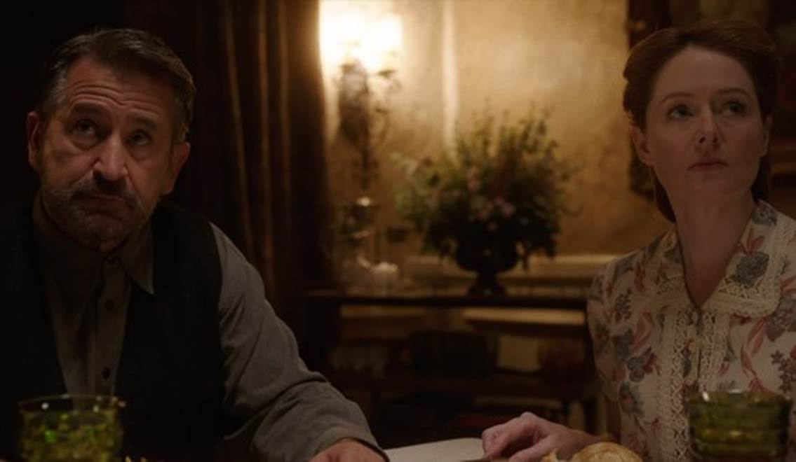
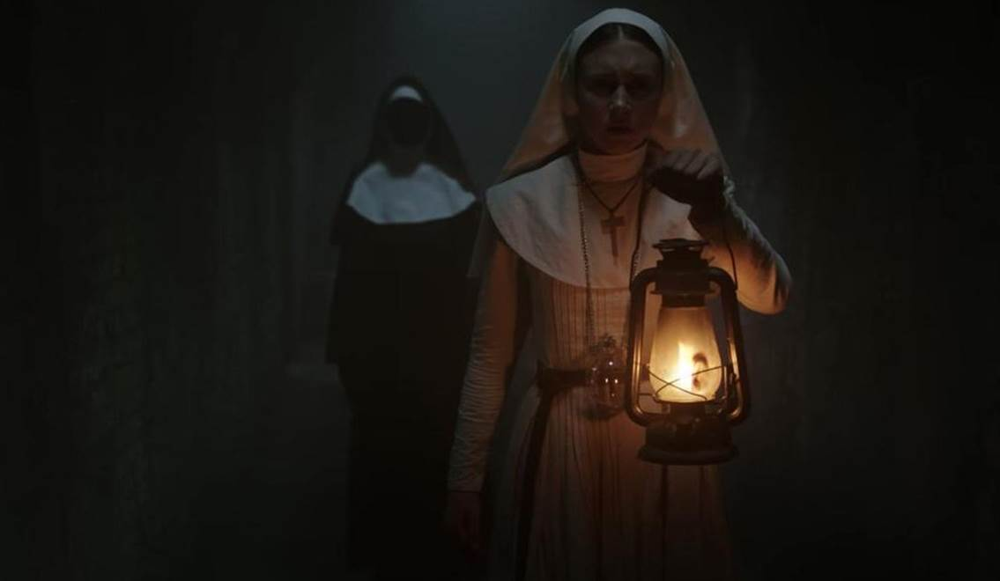
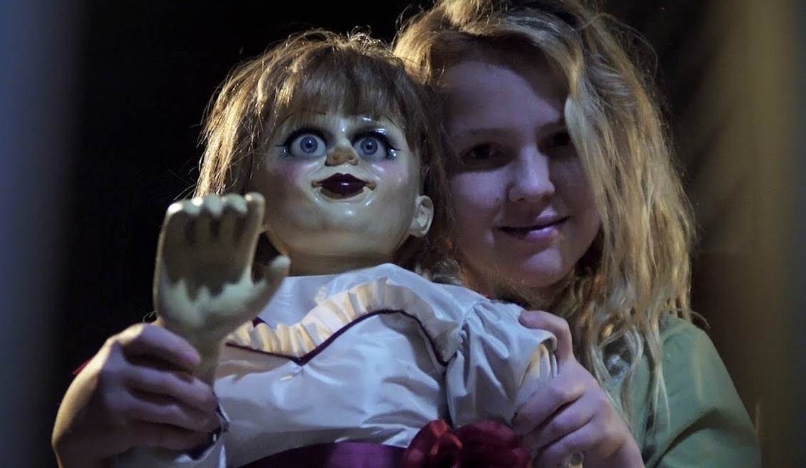
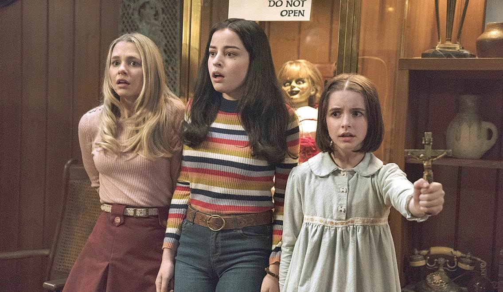
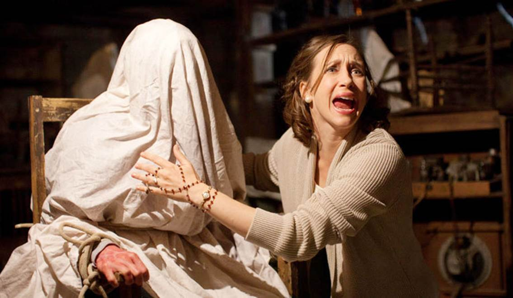
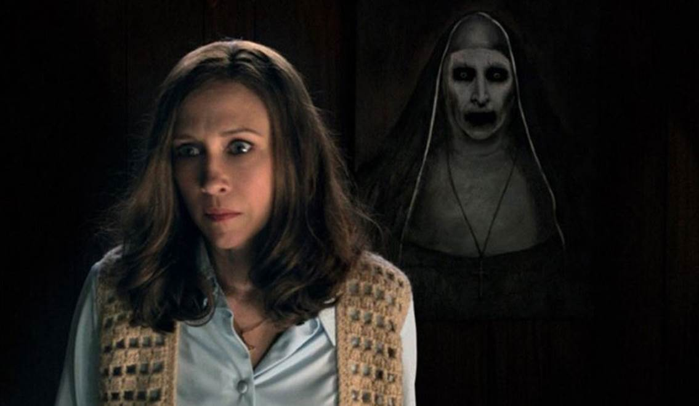
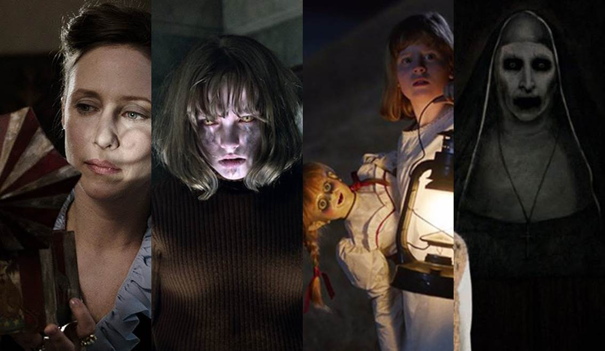

Hé Lộ Dòng Thời Gian Của Vũ Trụ Kinh Dị The Conjuring
Valak, Annabelle, Bathsheba…, nghe hơi quen đúng không? Chính xác rồi đấy, đây chính là “binh đoàn” ma quỷ nằm trong Vũ trụ kinh dị The Conjuring, mà đạo diễn James Wan đã tạo nên.
Kể từ The Conjuring đầu tiên được phát hành vào năm 2013, cho đến thời điểm hiện tại thì The Conjuring: The Devil Made Me Do It (The Conjuring 3), dự kiến ấn định ngày ra mắt tại các rạp chiếu phim vào mùa hè năm 2021.
Thế giới tâm linh với những thực thể tà ác đáng sợ do “Ông hoàng kinh dị” xây dựng thành công vang dội, nhờ vào việc liên kết giữa các sự kiện xảy ra ở mỗi bộ phim. Đã có tổng cộng 6 tác phẩm thuộc vũ trụ The Conjuring được trình chiếu, nội dung đều có tính kết nối lẫn nhau. Tuy rằng vẫn có đôi chỗ chưa hợp lý về dòng thời gian câu chuyện, nhưng với sự xuất hiện lần đầu tiên của một series có cốt truyện liên quan chặt chẽ với nhau, thương hiệu lừng danh The Conjuring luôn góp mặt trong danh sách những phim hay thuộc thể loại kinh dị, bấy nhiêu đã đủ để người hâm mộ dòng phim “nặng đô” này tự hào.
Để giúp người xem có cái tổng quát và dễ hiểu hơn về Vũ trụ The Conjuring, hãy cùng đi qua các chi tiết theo cột mốc thời gian đã diễn ra những tình tiết nổi bật:
*Bài viết có tiết lộ nội dung phim
Năm 1943 – Annabelle: Creation (2017)

Nghệ nhân làm búp bê Samuel Mullins đang sống hạnh phúc cùng vợ và đứa con gái 7 tuổi – Annabelle. Trong một lần vô tình, Annabelle bị tai nạn nên qua đời.
Vì quá thương nhớ con nên họ đã cho phép sự hiện diện của hồn ma cô bé được tồn tại trong nhà và nhập vào một con búp bê. Đáng tiếc thực thể kia lại vốn là một ác quỷ đang có âm mưu đem tới sự thống khổ cho cả hai vợ chồng.
Nhà Mullins bắt buộc với nhờ tới sự can thiệp của linh mục để trấn áp và nhốt Annabelle vào căn phòng bí mật.
Năm 1952 – The Nun (2018)

Tại tu viện Cartha’s ở Romania vào năm 1952, cái chết bí ẩn của một nữ tu đã dấy lên nghi ngờ rằng nơi đây đang có một thế lực quỷ dữ hoành hành. Vatican muốn điều tra rõ sự việc nên cử Cha xứ Burke và nữ tu Irene đến đó để tìm hiểu.
Trong quá trình làm sáng tỏ vụ việc, họ được sự hỗ trợ từ Frenchie (tên thật là Maurice) – một người nông dân thường giao hàng hóa cho tu viện.
Nguồn gốc của tu viện Cartha’s trước đây là lâu đài của một công tước thời xa xưa, ông ta đã thực hiện những nghi lễ huyền bí nhằm mục đích triệu hồi ác ma thông qua một cánh cổng. Phía giáo hội đã ngăn chặn và phong ấn cổng bằng máu của Chúa. Trải qua hàng trăm năm, bom đạn chiến tranh khiến tòa lâu đài bị hư hại, vô tình làm mất niêm phong, từ đó thế lực ma quỷ (lúc này là Valak) đã thoát ra, gieo rắc kinh hoàng.
Trong trận chiến cuối cùng, nữ tu Irene và Cha Burke tưởng chừng đã chiến thắng, nhưng Valak đã kịp ám vào anh chàng Frenchie đáng thương.
Năm 1955 – Annabelle: Creation (2017)

Trở lại với nhà Mullins, nhiều năm sau khi Annabelle bị giam giữ trong phòng bí mật, vợ chồng họ đón nhận một nhóm các đứa trẻ mồ côi đến ở nhờ trong thời gian có người tới nhận nuôi.
Đi cùng bọn trẻ là Sơ Charlotte (người đã từng có thời gian sinh sống ở tu viện Cartha’s). Trong đêm nọ, cô bé Janice vì tò mò nên đã mở khóa căn phòng có chứa búp bê Annabelle. Từ đây thực thể tà ác kia bắt đầu tấn công mọi người, Janice chính thức bị ác quỷ ám và trốn thoát không để lại dấu vết gì.
Không lâu sau, tại trại mồ côi Santa Monica, Janice đổi tên thành Annabelle và được gia đình Higgins nhận nuôi.
Năm 1967 – Annabelle (2014)

Sau khi trưởng thành, Annabelle Higgins cùng bạn trai của mình thuộc giáo Satan đã gia nhập làm môn đệ của quỷ Ram. Cô giết chết bố mẹ nuôi của mình, sau đấy tấn công gia đình vợ chồng Tom Form và Mia. Lúc này Mia đang mang thai, còn Annabelle Higgins trước khi chết đã cầm trên tay con búp bê của Mia và nguyền rủa.
Liên tiếp các hiện tượng kỳ dị diễn ra, Mia nhận thấy rằng quỷ dữ đang muốn chiếm đoạt linh hồn đứa con gái vừa chào đời của mình. Sự việc chỉ được giải quyết khi một người phụ nữ tên Evelyn chấp nhận ôm con búp bê và tự tử, hành động hy sinh này giúp cho thực thể tà ác bên trong con búp bê được khắc chế.
Năm 1969 – Annabelle Comes Home (2019)

Vào năm 1968, búp bê Annabelle được trưng bày trong một cửa tiệm, người phụ nữ lạ mặt đến mua nó để làm quà sinh nhật cho con gái của mình. Tuy nhiên lại một lần nữa Annabelle bắt đầu “phá phách”.
Vợ chồng nhà Ed và Lorraine Warren tiếp nhận điều tra rồi đưa con búp bê về nhà mình khóa chặt nó lại trong tủ kính thiêng dưới tầng hầm.
Một năm sau, con gái nhà Warren là Judy đã có một đêm kinh hoàng khi bố mẹ mình vắng nhà. Mary Ellen nhận trách nhiệm sẽ trông nom Judy khi hai vị phụ huynh bận việc điều tra, cô bạn thân của Mary là Daniela cũng tới nhà Warren vào đêm hôm đấy.
Do hiếu kỳ với căn phòng chứa đựng những vật dụng bị nguyền rủa nên Daniela đã lén xuống hầm. Cô nàng thậm chí còn mở khóa để thế lực ác quỷ trú ngụ trong Annabella thoát ra ngoài. Cũng nhờ vào sự nhanh trí và…chút may mắn mang tính sắp đặt của kịch bản, nên cả ba cô gái đã thoát nạn và nhốt con búp bê ma trở vào tủ kính thiêng.
Năm 1971 – The Conjuring (2013)

Đầu thập niên 70, Ed và Lorraine tiếp nhận điều tra một vụ ma ám. Nạn nhân là nông dân người Pháp gốc Canada tên Maurice (còn được biết đến với tên Frenchie, người đã bị Valak chiếm giữ linh hồn vào năm 1952). Biểu tượng thánh giá ngược hiện lên ở cổ và bụng của Maurice, lúc này Lorraine Warren tiếp xúc với Maurice và thấy được ảo ảnh về Valak, một điềm báo không tốt lành sẽ xảy ra trong tương lai.
Năm 1971, gia đình Perron chuyển đến sống ở căn nhà mới thuộc trang trại Harrisville, Rhode Island. Họ không ngờ rằng mảnh đất này từng thuộc về mụ phù thủy Bathsheba, vào năm 1863 mụ ta tuyên thệ trung thành với quỷ Satan và nguyền rủa bất cứ kẻ nào bước đất của mình, sau đó treo cổ tự tử.
Roger Perron cùng vợ mình là Carolyn và năm người con gái bắt đầu chứng kiến nhiều hiện tượng siêu nhiên đáng sợ. Vợ chồng nhà Warren chính thức bước vào công cuộc điều tra và giúp đỡ họ. Bathsheba nhập vào Carolyn với ý định thao túng linh hồn của cô, Ed Warren đã thực hiện nghi thức trừ tà để trục xuất linh hồn mụ phù thủy. Mọi việc kết thúc tốt đẹp và Bathsheba hoàn toàn bị khắc chế.
Năm 1977 – The Conjuring 2 (2016)

Thảm sát Amityville năm 1976 là vụ án liên quan đến ma ám nổi tiếng một thời, trong quá trình đi tìm sự thật, Lorraine Warren đã chạm trán Valak lần thứ hai. Lần này ác quỷ dưới hình dạng ma sơ đã đưa ra cảnh cáo về cái chết của Ed Warren, điều này đã ám ảnh Lorraine suốt thời gian dài.
Đến năm 1977, gia đình Hodgson bị quấy nhiễu bởi một hồn ma có hình dạng ông già đáng sợ có tên Bill Wilkins. Họ cầu cứu vợ chồng Ed-Lorraine, lúc này Bill đã nhập vào cô con gái nhà Hodgson là Janet và liên tục quấy phá.
Một sự cố xảy ra khiến cho tất cả đều hoài nghi và cho rằng Janet đang bịa đặt chuyện cô bị ma ám. Trên đường về nhà, Ed và Lorraine khám phá ra sự thật rằng linh hồn của Bill Wilkins bị một thực thể khác khống chế, nó đang âm mưu tước đoạt linh hồn Janet. Dưới hình dạng nữ tu như thể hiện sự báng bổ Chúa, Valak đã thao túng Janet và muốn giết chết Ed Warren, tuy nhiên Lorraine đã xuất hiện và tiêu diệt ác ma bằng cách cổ xưa nhất - đọc tên của Valak nhằm chế ngự quỷ dữ, trục xuất nó về địa ngục. Lại một lần nữa vụ án kinh hoàng được khép lại với kết thúc có hậu.
Những điểm bất hợp lý về mạch thời gian

* Ở đoạn cuối của The Nun, mốc thời gian từ năm 1952 chuyển đến 20 năm sau – tức năm 1972. Khán giả được xem lại một phân đoạn từ The Conjuring, khi Carolyn tới buổi thuyết trình của vợ chồng Ed – Lorraine Warren và nghe họ kể về vụ án ma ám liên quan đến Maurice – Frenchie.
Trên thực tế thì sự kiện nhà Perron bị quấy nhiễu bởi phù thủy Bathsheba xảy ra vào năm 1971.
* Khi phần phim Annabelle Comes Home kết thúc, tại nhà Warren người xem nhìn thấy trong căn phòng cất giữ những đồ vật bị ám có chiếc hộp âm nhạc. Đây chính là thứ từng xuất hiện ở The Conjuring, đứa con út nhà Perron đã dùng nó để giao tiếp với linh hồn của một bé trai từng là nạn nhân của Bathsheba.
Nội dung của Annabelle Comes Home xảy ra vào năm 1969, nhưng vụ án của gia đình Perron đến năm 1971 mới xuất hiện.